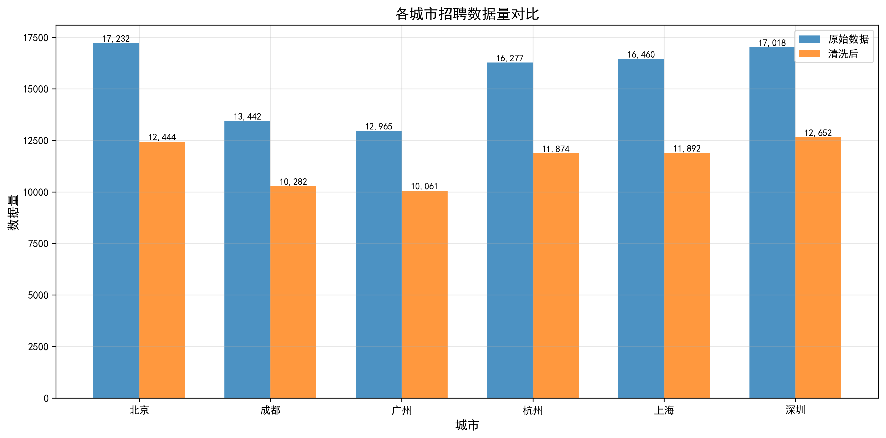
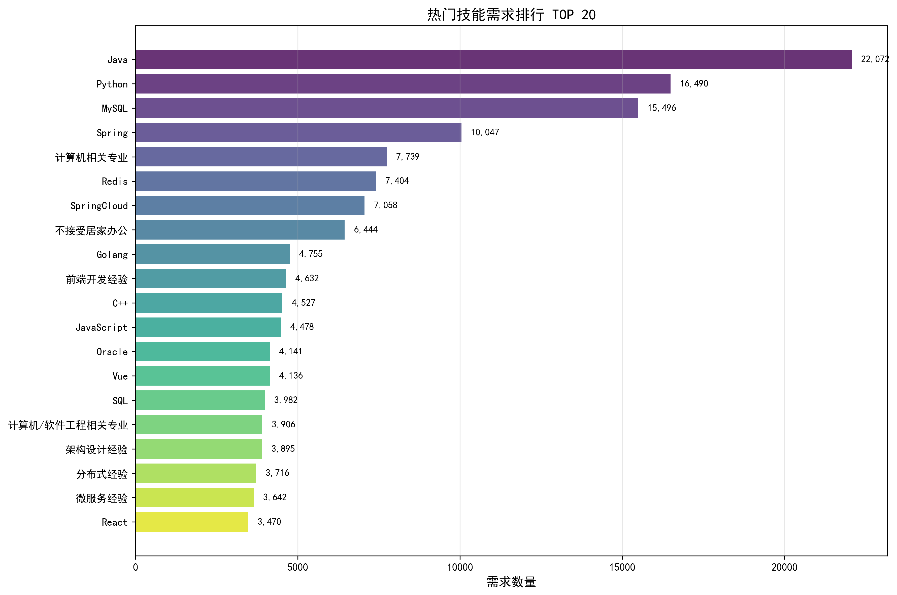
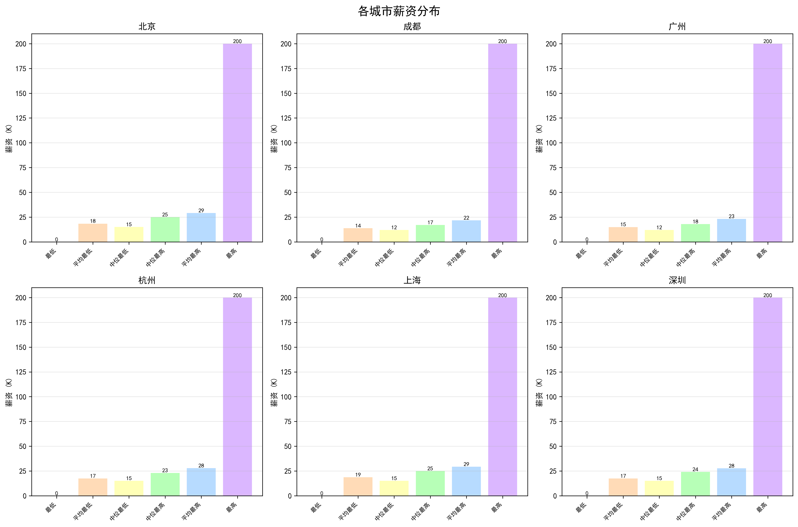

📊 数据质量报告
生成时间: 2026年01月30日 23:39:43
一、数据概览
城市数量
6
原始数据总量
93,394
清洗后数据量
69,205
数据保留率
74.1%
二、城市数据对比

| 城市 | 原始数据 | 清洗后 | 保留率 | 平均薪资范围 |
|---|---|---|---|---|
| 北京 | 17,232 | 12,444 | 72.21% | 18.4K - 29.1K |
| 成都 | 13,442 | 10,282 | 76.49% | 13.8K - 21.7K |
| 广州 | 12,965 | 10,061 | 77.60% | 15.0K - 23.1K |
| 杭州 | 16,277 | 11,874 | 72.95% | 17.5K - 27.9K |
| 上海 | 16,460 | 11,892 | 72.25% | 18.7K - 29.3K |
| 深圳 | 17,018 | 12,652 | 74.34% | 17.4K - 27.6K |
三、热门技能分析

四、薪资分布

五、学历与经验要求